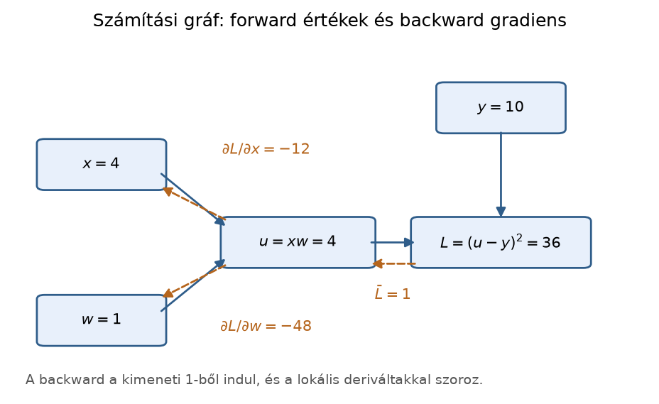
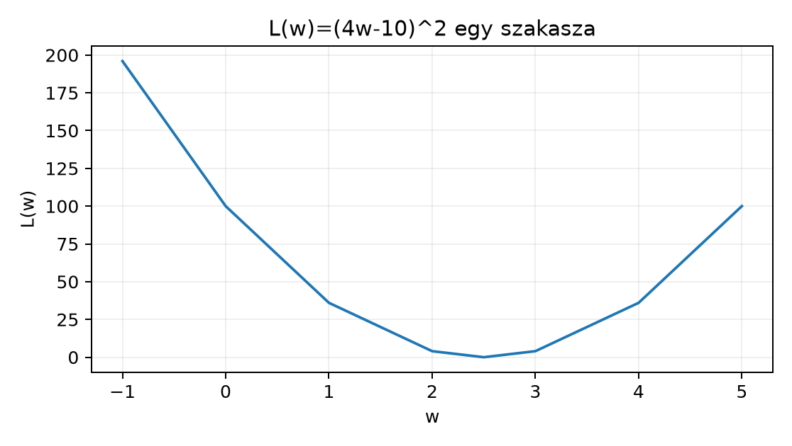

Belépő · szint: közép · idő: 60 perc · eszköz: Python, NumPy, matplotlib
Előfeltétel: 11.2. alfejezet · Célkészség: Láncszabály és számítási gráf · Kimenet: működő kód és a labor ellenőrző tesztje.
Egyetlen megfigyelési egységgel dolgozunk: az
tanulóponttal. Az
a bemeneti jellemző, a
a megfigyelt célérték; mindkettő ebben a redukált tanulási példában
dimenziótlan skalár float64. A modell legyen
,
egyetlen becsülendő meredekséggel, a veszteség pedig az egyszerű
négyzetes hiba:
A kérdés: mennyi a veszteség deriváltja a kezdőpontban, azaz ? Mielőtt a láncszabályt kimondjuk, adjon becslést. A parabola minimuma ; a pont ettől balra van, ezért a függvény ott csökkenő, tehát a derivált negatív. A pontos értéket a láncszabályból kapjuk meg, és számítási gráf gráfként is ellenőrizzük.
Az összetett függvény (composition) lényege, hogy egy függvény kimenete egy másik függvény bemenete lesz. A fenti veszteség három lépésre bontható:
A szerinti teljes változási ráta a láncszabály (chain rule) szerint a lépésenkénti változási ráták szorzata:
A jelölés az egyváltozós külső függvényre utal, a pedig arra, hogy a csomópontnak több bemenete is van, és a többit rögzítettnek tekintjük. A helyi derivált (local derivative) mindig csak egyetlen csomópont közvetlen bemeneteire vonatkozik; a csomópontnak nem kell tudnia, mi van a gráf többi részén. A három helyi derivált:
A láncszabály így:
A forward pass (előremenő fázis) a bemenettől a kimenetig kiszámítja és eltárolja az összes köztes értéket. A pontban:
forward pass:
u = 4 * 1 = 4
a = 4 - 10 = -6
L = (-6) * (-6) = 36A backward pass előkép (visszamenő fázis) a kimenettől indul. Vezessük be a jelölést a csomópont szerinti kimeneti gradiensre: . A legfelső csomópontra . Utána minden élen visszafelé megszorozzuk a fentről érkező gradienst az élhez tartozó helyi deriválttal:
backward pass:
bar_L = 1
bar_a = bar_L * (2a) = 1 * (2 * -6) = -12
bar_u = bar_a * 1 = -12
bar_y = bar_a * (-1) = 12
bar_w = bar_u * x = -12 * 4 = -48A az deriváltja a paraméter szerint. A azt mutatja, hogy a megfigyelt cél növelése növelné a hibát; a nem paraméter, de a gráf teljes gradiense szempontjából ugyanúgy kiszámítható. A szorzat „tagonkénti” olvasata: a négyzetből jön a pillanatnyi hiba kétszerese, ; a kivonásból az ; a szorzatból pedig a másik tényező, . Ezért a végső gradiens , vagyis a hiba kétszeresének és a bemenetnek a szorzata.

Az ábra a láncszabály működését mutatja: a folytonos nyilak a forward
számítást, a szaggatottak a backward passzt jelölik. A csomópontokban a
konkrét értékek, a szaggatott nyilak mellett a lokális deriváltak
szorzata látható. A konklúzió ábra nélkül is ugyanaz: a backward a
kimeneti
-ből
indul, és a helyi deriváltak szorzatával adja a paraméterek szerinti
gradienst; a köztes értékeket a forward fázisnak meg kell őriznie. A
teljes generátor: lab/figures/make_concept_figures.py
backprop_graph(); a reprodukálható mag:
import matplotlib.pyplot as plt
from matplotlib.patches import FancyArrowPatch, FancyBboxPatch
fig, ax = plt.subplots(figsize=(6.4, 3.6))
ax.set_xlim(0, 1); ax.set_ylim(0, 1); ax.axis("off")
nodes = [(0.14, 0.64, "$x=4$"), (0.14, 0.20, "$w=1$"),
(0.45, 0.42, "$u=xw=4$"), (0.77, 0.42, "$L=(u-y)^2=36$"),
(0.77, 0.80, "$y=10$")]
for x, y, text in nodes:
ax.add_patch(FancyBboxPatch((x - 0.1, y - 0.06), 0.2, 0.12,
boxstyle="round,pad=0.012", facecolor="#e8f0fb"))
ax.text(x, y, text, ha="center", va="center", fontsize=8.5)
for start, end in [((0.23, 0.62), (0.34, 0.46)), ((0.23, 0.22), (0.34, 0.38)),
((0.56, 0.42), (0.64, 0.42)), ((0.77, 0.74), (0.77, 0.48))]:
ax.add_patch(FancyArrowPatch(start, end, arrowstyle="-|>", mutation_scale=11))
for start, end in [((0.64, 0.36), (0.56, 0.36)), ((0.34, 0.36), (0.23, 0.26)),
((0.34, 0.48), (0.23, 0.58))]:
ax.add_patch(FancyArrowPatch(start, end, arrowstyle="-|>", mutation_scale=11,
color="#b5651d", linestyle="--"))
plt.show()A láncszabály hibáját akkor lehet lokalizálni, ha a forward és a backward lépések köztes értékei is látszanak. Az gráf két csomópontja és ; a backward lépések: , , ezért .
| numerikus | ||||||
|---|---|---|---|---|---|---|
| 1 | 3 | 9 | 6 | 2 | 12 | 12.000000 |
| -0.5 | 0 | 0 | 0 | 2 | 0 | 0.000000 |
| 3 | 7 | 49 | 14 | 2 | 28 | 28.000000 |
A tipikus hiba, hogy a backward során kimarad a faktor: ekkor -nél a téves gradiens , miközben a numerikus ellenőrzés 12-t ad. A gradiens-ellenőrzés ezt a különbséget azonnal megfogja; a köztes értékek táblája pedig megmutatja, melyik lépés hibás.
def trace(x):
z = 2.0 * x + 1.0
y = z * z
dy_dz = 2.0 * z
dz_dx = 2.0
dy_dx = dy_dz * dz_dx
numeric = ((2.0 * (x + 1e-6) + 1.0) ** 2
- (2.0 * (x - 1e-6) + 1.0) ** 2) / 2e-6
return {"x": x, "z": z, "y": y, "dy_dz": dy_dz,
"dz_dx": dz_dx, "dy_dx": dy_dx, "numeric": numeric,
"error": abs(dy_dx - numeric)}
for x in (1.0, -0.5, 3.0):
print(trace(x))A lab/chain_debug.py trace(),
check() és wrong_check() függvényei a helyes
és a szándékosan hiányos láncszabályt állítják szembe; a
tests/test_chain_debug.py a három
értéket, a
alatti eltérést és a hibás
gradiens detektálását ellenőrzi.
A példa a tanulási lab környezetben futtatható; a
lab/pyproject.toml alap numerikus csomagjain kívül más
függőséget nem igényel. A kódot a Jupyter-környezet cellájában, vagy egy
chain_rule_demo.py fájlba mentve a
uv run python chain_rule_demo.py paranccsal indíthatjuk a
lab projektgyökérből. A kód és a levezetés alább szemléltető, nem
állítjuk, hogy a szöveget író modell ténylegesen futtatta; a kézi
számpélda a levezetés ellenőrzése.
import numpy as np
x = 4.0
y = 10.0
w0 = 1.0
def forward(w):
"""Előremenő fázis: köztes értékek és veszteség."""
u = w * x # szorzat
a = u - y # eltérés
L = a * a # négyzetes hiba
return u, a, L
u, a, L = forward(w0)
# Backward pass: minden lépésben egy helyi derivált.
bar_L = 1.0
bar_a = bar_L * (2.0 * a) # dL/da
bar_u = bar_a * 1.0 # da/du
bar_y = bar_a * (-1.0) # da/dy
bar_w = bar_u * x # du/dw
bar_x = bar_u * w0 # du/dx
# Numerikus kontroll központi differenciával.
h = 1e-6
_, _, Lp = forward(w0 + h)
_, _, Lm = forward(w0 - h)
numeric_grad = (Lp - Lm) / (2.0 * h)
print("forward: u, a, L =", u, a, L)
print("bar_w =", bar_w)
print("bar_x, bar_y =", bar_x, bar_y)
print("numeric grad:", numeric_grad)
print("ellenorzes tolerancian belul:",
np.allclose(bar_w, numeric_grad, atol=1e-8))A futás szemléltető elvárt kimenete:
forward: u, a, L = 4.0 -6.0 36.0
bar_w = -48.0
bar_x, bar_y = -12.0 12.0
numeric grad: -48.0
ellenorzes tolerancian belul: TrueA
másodfokú függvény, ezért a központi differencia elméletileg pontosan
-at
ad; lebegőpontos kerekítés miatt ettől
nagyságrendben eltérhet, amire a np.allclose toleranciája
van beállítva.
A görbét egy chart-blokkban is szemléltethetjük:

A pontok a megadott képletből származnak; a pontban az érintő egyenes , tehát a negatív meredekség látható a csökkenő szakaszon.
A láncszabályos gradiens . Az egyszerűsített analitikus formula ugyanezt adja: . A negatív előjel jelentése: kis növelése csökkenti a veszteséget, mert a predikció -ről közelít a -es cél felé. A pontban a hiba , ezért a gradiens is nulla lesz; ettől balra negatív, jobbra pozitív.
A gráf invariant ellenőrzése: a backward passban a
azért igaz, mert
és
konstans, tehát a
változása ugyanakkora változást okoz az
-ban.
A
azért, mert a
predikció w-szerinti helyi deriváltja a másik tényező,
.
A
pedig a kivonásból adódik. Minden mennyiség skalár, dtype
float64; vektoros változatban a
jellemzővektor jelenne meg a gradiens helyén, de a lánclogika ugyanez
marad.
A számítási gráf láncszabálya lokális deriváltakat szoroz és összegez. A gradiensellenőrzéshez használjunk középpontos véges differenciát több paraméterponton; egyetlen ponton kapott egyezés nem garantálja, hogy az implementáció általánosan helyes.
Az 1–4. feladatot önállóan oldd meg; a megoldások utána, indoklással jönnek.
Értelmezés. Tekintsd az veszteséget a pontban. Bontsa fel , , lépésekre, végezze el a forward és backward passzt, és add meg -t. Indokold a derivált előjelét: miért negatív?
Megvalósítás. Írj
grad_linear_squared(x, y, w) függvényt, amely a forward
pass és a helyi deriváltak alapján visszaadja a
(u, a, L, bar_w) értékeket a
,
,
gráfra. Teszteld
bemenettel; az elvárt gradiens
.
Hibakeresés. Egy kolléga a fenti gráfban ezt
írta: bar_w = bar_a * 1.0, tehát elhagyta az
* x szorzót. Az
esetre milyen értéket ad a programja, és miért hibás? Hogyan dönthető el
a hiba numerikus kontrollal?
Megváltozott feltétel. A modell bővül intercepttel: , a veszteség . Add meg a számítási gráfot, és a láncszabállyal számítsd ki mindkét parciális deriváltat, -t és -t, az pontban.
1. megoldás. Forward: , , . Backward: , ; ; . A negatív előjel azt mutatja, hogy növelése növeli a predikciót, ezáltal a hibát nullához közelíti, tehát a veszteség csökken. Ellenőrzés a zárt formulával: a helyen .
2. megoldás. A függvény a példa forward és backward lépéseit rögzíti:
def grad_linear_squared(x, y, w):
u = w * x
a = u - y
L = a * a
bar_L = 1.0
bar_a = bar_L * (2.0 * a)
bar_u = bar_a * 1.0
bar_w = bar_u * x
return u, a, L, bar_w
u, a, L, bar_w = grad_linear_squared(2.0, 5.0, 1.0)
print(u, a, L, bar_w) # szemlelteto elvart: 2.0 -3.0 9.0 -12.0Az ellenőrző invariant: bar_w == 2*(w*x - y)*x. A
bemenetre
.
A numerikus differenciával való összehasonlítás ismét
tolerancián belül marad.
3. megoldás. A kolléga a bar_a * 1.0
értéket, azaz
-t
kap, mert a
-ból
csak a
-ba
haladt, de a
szorzat
-szerinti
helyi deriváltját,
-et,
elfelejtette. Ez a szorzat-tag elvesztése; a helyes érték
.
Numerikus kontroll: a forward pass mindkét w-értéken fut, a központi
differencia
-at
közelít; a
négyszeres eltérése azonnal jelzi a hiányzó tényezőt.
4. megoldás. Gráf: , , , . Forward: , , , . Backward: ; ; ; ; ; ; ; . A paraméterek gradiense tehát . Zárt képlet: és ; a kettő egyezik. A növelése túlbecslést okoz, ezért a veszteség nő, amit a pozitív mutat.
Tévedés: az automatikus differenciálás (autodiff) nem véges differencia, és nem ígéri, hogy a derivált minden pontban létezik. A véges differencia egy numerikus közelítés; csonkolási hibája van, és a lépésköz túl kicsire választásával a lebegőpontos kerekítés felerősödik. A láncszabályos gráf ezzel szemben analitikus szabályokat alkalmaz, ezért a négyzetes példán a képlet pontosan adja a gradiens szerkezetét. Ellenpélda a második félmondatra: a -ban nem differenciálható. A gráf ott nem tud egyértelmű helyi deriváltat adni; a bal oldali meredekség , a jobb oldali . Egy autodiff implementáció vagy hibát jelez, vagy valamelyik féloldali értéket választja konvencióként, de ez már nem a derivált.
Visszautalás. A 11.2. alfejezetben a gradiens a parciális deriváltak vektoraként jelent meg; most ennek egyetlen lánc menti elemi összetevőjét építettük fel. A 10.3. alfejezet legkisebb négyzetes normálegyenlet gradiense ; ennek egyetlen mintára eső darabja a most levezetett alak. A 7.3. alfejezet CTE-láncához hasonlóan itt is számítási gráfról van szó: a forward fázisból származó köztes értékek nélkül a backward fázis nem végezhető el, ahogyan a CTE-lépések sorrendje is meghatározza a lekérdezést.
Önellenőrzés. Nézze végig, hogy a backward pass miért -gyel indul; miért szorozzuk az egyes lépésekben a helyi deriváltat a fentről kapott gradienssel; hol használtuk a forward passban elmentett értéket; és mi történne, ha egy köztes csomópontnak több kimenő éle lenne — a gradiensek akkor összegződnének a bejövő éleken. Ha ezekre tud válaszolni, a láncszabály gráfját érti.
A láncszabály az összetett függvény változási rátáit lépésenkénti helyi deriváltak szorzatává alakítja. A számítási gráfban a forward pass eltárolja a köztes értékeket, a backward pass pedig a kimeneti gradiensből visszafelé szorozva adja a paraméterek szerinti gradienst. A lineáris predikció négyzetes hibájára esetén ; a pontban ez , és a numerikus kontroll tolerancián belül egyezik. Az autodiff ezt a mechanizmust gépesíti, de nem véges differencia, és csak differenciálható pontokban érvényes. A következő alfejezetben ezt a gradienst optimalizáló lépéssé alakítjuk.